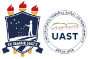

Uma cidade conhecida por suas baixas taxas de incidentes de trânsito. Prepare-se para assumir diferentes papéis e enfrentar desafios emocionantes enquanto tenta manter a ordem nesta cidade modelo, incentivando o cumprimento das leis de trânsito para evitar acidentes. O jogo utiliza a abordagem de computação em blocos, proporcionando uma experiência envolvente.
W, A, S, D: Movimente o personagem até os veículos
Enter: Interaja com os veículos
ESC: Pausa o jogo
Mouse: Utilize o mouse para clicar e arrastar as setas indicativas de movimentação de blocos. Posicione-as corretamente para guiar o veículo pelo percurso desejado.
Você começa como um entregador de pizza recém-contratado na cidade. Desbrave pelas ruas, evitando cometer erros de trânsito e causar acidentes. Seja ágil e entregue pizzas no prazo para ganhar moedas, mas tenha cuidado para não infringir as regras locais.
Objetivo: Evitar infrações de trânsito e entregar pizzas para ganhar moedas.
Agora, você assume o papel de um motorista de ônibus responsável por transportar alunos para a escola. Mostre suas habilidades ao respeitar todas as leis de trânsito para garantir a segurança dos estudantes. Cumpra horários e siga todas as regras para acumular pontos na sua jornada pela cidade.
Objetivo: Transportar alunos com segurança, respeitando as leis de trânsito e acumulando moedas.
Nesta fase, você assume o papel de um taxista. Como motorista de táxi, sua missão é oferecer um serviço eficiente aos passageiros, respeitando as leis de trânsito e proporcionando uma experiência segura.
Objetivo: Se torne o taxista mais respeitado da Transit Village, acumulando moedas através de corridas bem-sucedidas e respeito às leis de trânsito.
Prepare-se para uma jornada emocionante em Transit Village! Domine as leis de trânsito e torne-se o melhor condutor da cidade. Boa sorte!
Jogo criado por: Mariana de Carvalho Nunes
Projeto criado para a disciplina:
Interface Homem-Máquina (IHM)
Professor: Richarlyson D'Emery
Universidade Federal Rural de Pernambuco - UFRPE
Unidade Acadêmica de Serra Talhada - UAST
